Arhitectură
Arhitectura este atât procesul, cât și produsul planificării, proiectării și construirii clădirilor sau a altor structuri. Lucrările arhitecturale, sub forma materială a clădirilor, sunt adesea percepute ca simboluri culturale și ca opere de artă. Civilizațiile istorice sunt adesea identificate cu realizările lor arhitecturale care au supraviețuit.
Arhitectura a început ca o arhitectură vernaculară, rurală, orală, care s-a dezvoltat de la încercare și greșeală la replicarea cu succes. Arhitectura urbană antică a fost preocupată de construirea structurilor religioase și a clădirilor care simbolizează puterea politică a conducătorilor, până când arhitectura greco-romană a mutat accentul pe virtuțile civice. Arhitectura indiană și cea chineză au influențat formele din toată Asia, iar arhitectura budistă, în special, a luat diverse arome locale. În timpul Evului Mediu european, au apărut stiluri paneuropene de catedrale și abateri romanice și gotice, în timp ce Renașterea a favorizat formele clasice implementate de arhitecți cunoscuți pe nume. Mai târziu, rolurile arhitecților și inginerilor s-au separat. Arhitectura modernă s-a dezvoltat după Primul Război Mondial ca o mișcare de avangardă care urmărea să dezvolte un stil complet nou, adecvat pentru o nouă ordine socială și economică postbelică axată pe satisfacerea nevoilor claselor mijlocii și muncitoare. S-a pus accent pe tehnicile moderne, materialele și formele geometrice simplificate, deschizând calea suprastructurilor înalte. Mulți arhitecți s-au plictisit de modernism, pe care l-au perceput ca fiind aistoric și antiestetic, iar arhitectura postmodernă și cea contemporană au început a se dezvolta.
Practica, care a început în preistorie, a fost folosită ca modalitate de exprimare a culturii pentru civilizații de pe toate cele șapte continente. Din acest motiv, arhitectura este considerată a fi o formă de artă. Textele despre arhitectură au fost scrise din cele mai vechi timpuri. Cel mai vechi text care a supraviețuit despre teoria arhitecturii este tratatul de architectură din secolul I d.Hr., al arhitectului roman Vitruviu, conform căruia o clădire bună întruchipează firmitas, utilitas și venustas (durabilitate, utilitate și frumusețe). Secole mai târziu, Leon Battista Alberti și-a dezvoltat ideile în continuare, văzând frumusețea ca o calitate obiectivă a clădirilor care se regăsește în proporțiile lor. Giorgio Vasari a scris "Viața Celor Mai Excelenți Pictori, Sculptori și Arhitecți" și a prezentat ideea de stil în artă în secolul al XVI-lea. În secolul al XIX-lea, Louis Sullivan a declarat că „forma urmează funcția”. „Funcția” a început să înlocuiască „utilitatea” clasică și a fost înțeleasă că include nu numai dimensiuni practice, ci și estetice, psihologice și culturale.
| 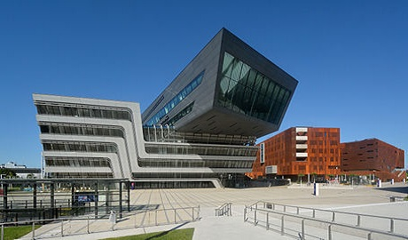 | 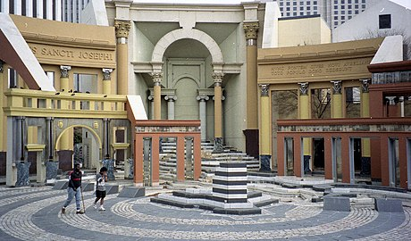 | 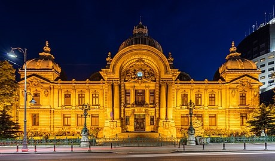 | 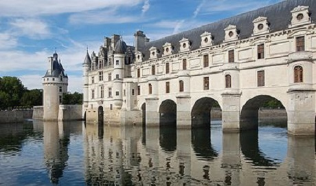 |
Istoria arhitecturii
Clădirea a evoluat mai întâi din dinamica dintre nevoi (adăpost, securitate, închinare, etc.) și mijloace (materiale de construcție disponibile și abilități). Pe măsură ce culturile umane s-au dezvoltat și cunoștințele au început să fie formalizate prin tradiții și practici orale, construirea a devenit un meșteșug, iar „arhitectura” a devenit numele dat versiunilor extrem de formalizate și respectate ale meșteșugului. Se presupune în mare măsură că succesul arhitectural a fost produsul unui proces de încercare și greșeală, cu o încercare progresivă mai mică și mai multă replicare, pe măsură ce rezultatele procesului s-au dovedit din ce în ce mai satisfăcătoare. Ceea ce se cheamă arhitectură vernaculară continuă să fie produsă în multe părți ale lumii.
| 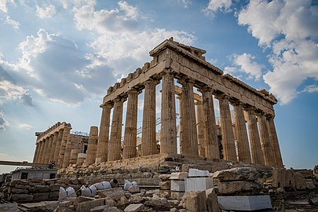 | ●Arhitectura antică În multe civilizații antice, ca cele din Egipt și Mesopotamia, arhitectura și urbanismul reflectă angajamentul constant cu divinitatea și supranaturalul, iar multe culturi antice au recurs la monumentalitate în arhitectură pentru a reprezenta simbolic puterea politică a conducătorului, a elitei conducătoare sau a statului însuși. |
Evul mediu În Europa, în perioada medievală, breslele au fost formate de meșteri pentru a-și organiza meseriile, iar contractele scrise au supraviețuit, în special în ceea ce privesc clădirile bisericești. Rolul de arhitect a fost de obicei numit maestru zidar, sau Magister lathomorum, așa cum sunt uneori descriși în documentele contemporane. |
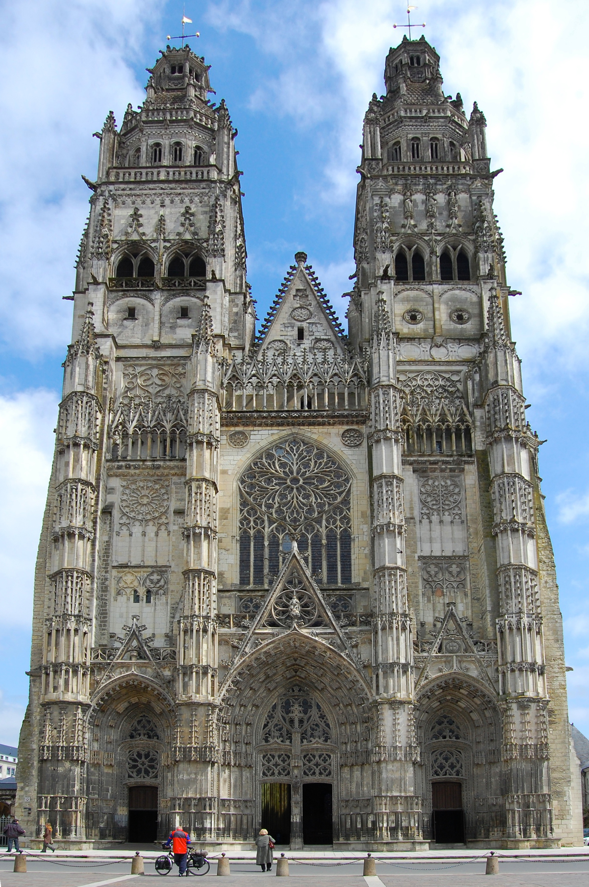 |
| 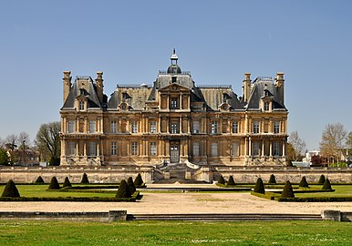 | ●Perioada modernă timpurie și cea industrială Odată cu cunoștințele în curs de dezvoltare din domeniile științifice și apariția noilor materiale și tehnologii, arhitectura și ingineria au început să se separe, iar arhitectul a început să se concentreze asupra aspectelor estetice și umaniste, adesea în detrimentul aspectelor tehnice ale proiectării clădirilor. A existat, de asemenea, apariția „arhitectului gentleman” care se ocupa de obicei cu clienții bogați și se concentra în mod predominant pe calitățile vizuale derivate de obicei din prototipurile istorice, tipificate de numeroasele case de țară din Marea Britanie care au fost create în stilurile neogotic sau scoțian baronial. Formarea arhitecturală formală din secolul al XIX-lea, de exemplu la École des Beaux-Arts din Franța, a acordat mai mult accent producției de desene frumoase și mai puțin contextului și fezabilității. |
Modernismul La începutul secolului al XX-lea, nemulțumirea generală față de accentul pus pe arhitectura reviviscentă și decorarea elaborată a dat naștere la noi linii de gândire, care au servit ca precursori ai arhitecturii moderne. Printre acestea e și Deutscher Werkbund, o asociație formată în 1907 pentru a produce obiecte fabricate de mașinării de o calitate mai bună. Creșterea profesiei de design industrial este de obicei plasată aici. În urma acestui exemplu, școala Bauhaus, fondată la Weimar (Germania) în 1919, a redefinit limitele arhitecturale stabilite anterior de-a lungul istoriei, privind crearea unei clădiri ca fiind sinteza supremă - vârful - artei, meșteșugurilor și a tehnologiei. |
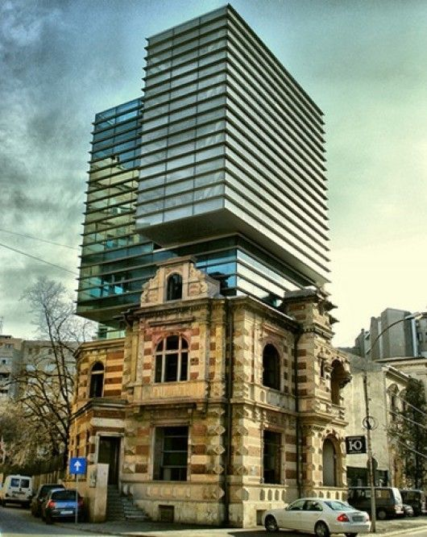 |
| 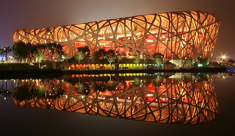 | ●Arhitectura de astăzi Din anii 1980, pe măsură ce complexitatea clădirilor a început să crească (în ceea ce privește sistemele structurale, serviciile, energia și tehnologiile), domeniul arhitecturii a devenit multidisciplinar cu specializări pentru fiecare tip de proiect, expertiză tehnologică sau metode de livrare a proiectelor. Mai mult, a existat o separare sporită a arhitectului „de design” de arhitectul „de proiect”, care se asigură că proiectul îndeplinește standardele cerute și se ocupă de chestiuni de răspundere. Procesele pregătitoare pentru proiectarea oricărei clădiri mari au devenit din ce în ce mai complicate și necesită studii preliminare de aspecte ca durabilitatea, calitate, cost și respectarea legilor locale. O structură mare nu mai poate să fie designul unei singure persoane, ci trebuie să fie opera mai multora. Modernismul și postmodernismul au fost criticate de unii membri ai profesiei de arhitect, care consideră că arhitectura de succes nu este o căutare personală, filosofică sau estetică a individualiștilor; mai degrabă trebuie să ia în considerare nevoile zilnice ale oamenilor și să utilizeze tehnologie ca să creeze medii viabile, procesul de proiectare fiind informat prin studii de științe comportamentale, de mediu și sociale. |
| 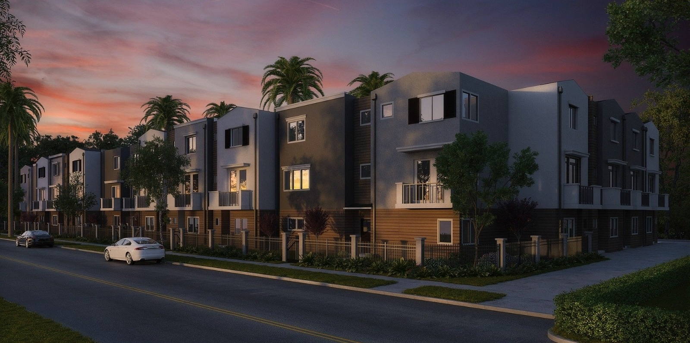 | 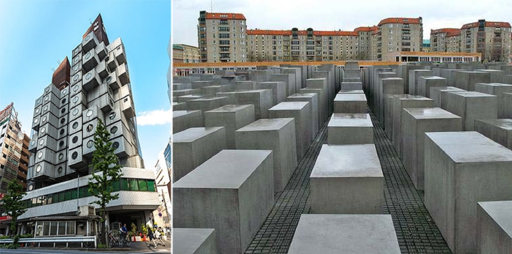 |